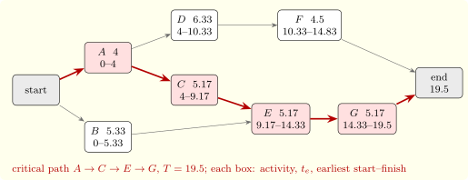

8.5 Uncertain durations: PERT
The Program Evaluation and Review Technique (PERT), developed for the Polaris missile programme in 1958, gives each activity an optimistic time \(a\), a most likely time \(m\) and a pessimistic time \(b\), and models the duration as a beta distribution with \[ t_e = \frac {a + 4m + b}6, \qquad \sigma ^2 = \Bigl (\frac {b - a}6\Bigr )^2 . \] The project duration is approximated by the sum along the critical path computed with the \(t_e\), which by the central limit theorem is roughly normal with mean \(T\) and variance the sum of the variances along the path. Then \(P(\text {finish by } D) \approx \Phi \bigl ((D - T)/\sigma \bigr )\).
The approximation is optimistic, for two reasons: other paths that are nearly critical may turn out longest (the merge-event bias), since the duration is the maximum over paths, and the expected maximum exceeds the maximum of the expectations; and a few activities on one path are not many enough for the central limit theorem. Simulation, the subject of the last section, removes both errors.
Example 8.5.1. Seven activities have predecessors and estimates \((a, m, b)\): \(A\): none, \((2, 4, 6)\); \(B\): none, \((3, 5, 9)\); \(C\): \(A\), \((4, 5, 7)\); \(D\): \(A\), \((4, 6, 10)\); \(E\): \(B\) and \(C\), \((4, 5, 7)\); \(F\): \(D\), \((3, 4, 8)\); \(G\): \(E\), \((3, 5, 8)\). The expected times are \(4, 5.33, 5.17, 6.33, 5.17, 4.5, 5.17\). The forward pass gives \(T = 19.5\) along the critical path \(A \to C \to E \to G\) (Figure 8); \(B\) has float \(3.83\), and \(D\) and \(F\) have float \(4.67\). The variance along the critical path is \(\frac 49 + \frac 14 + \frac 14 + \frac {25}{36} = 1.639\), \(\sigma = 1.28\), so \(P(\text {finish by } 21) \approx \Phi (1.17) = 0.879\). Simulation with beta durations gives \(0.848\) (Software 8.6.3).

When activities can be shortened at a cost (crashing), the cheapest way to meet a deadline is a linear programme: variables for the event times and the amount each activity is crashed, constraints for the precedences, and the objective the total crashing cost. Its solution shortens critical activities, and as the deadline tightens, more paths become critical together.
Questions on this section
Stuck on something here? Ask below and it stays attached to this topic.